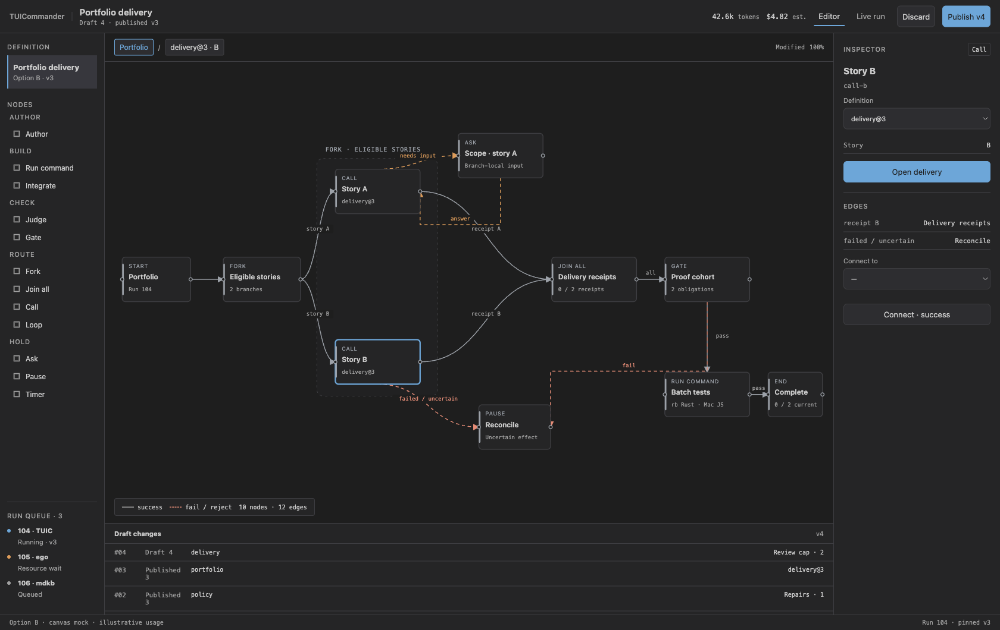
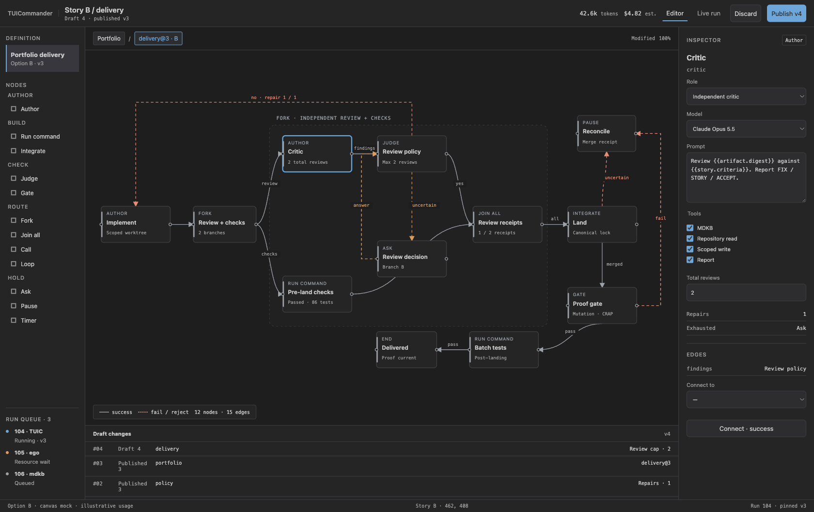
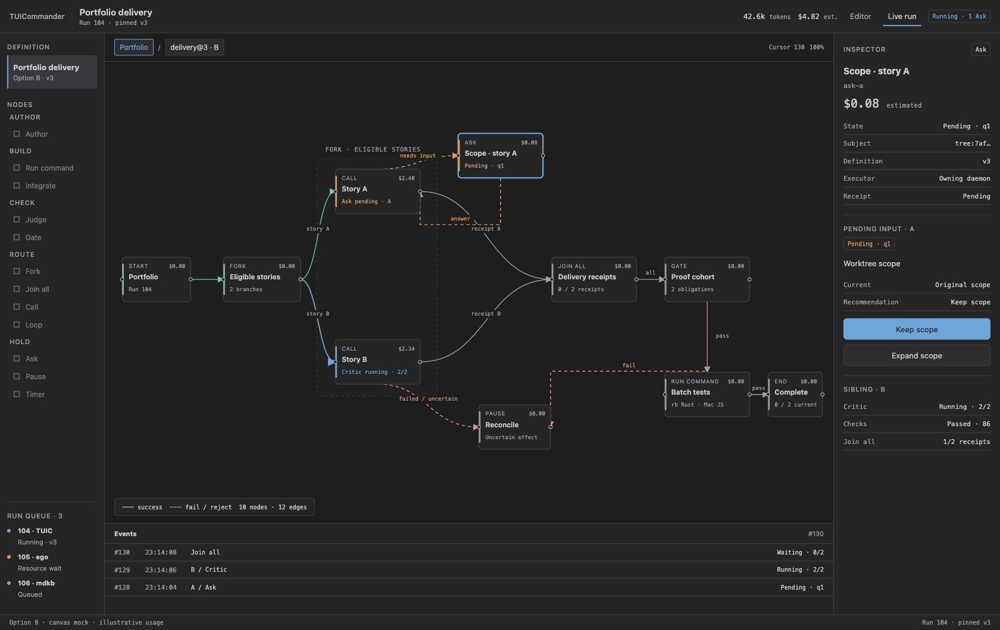
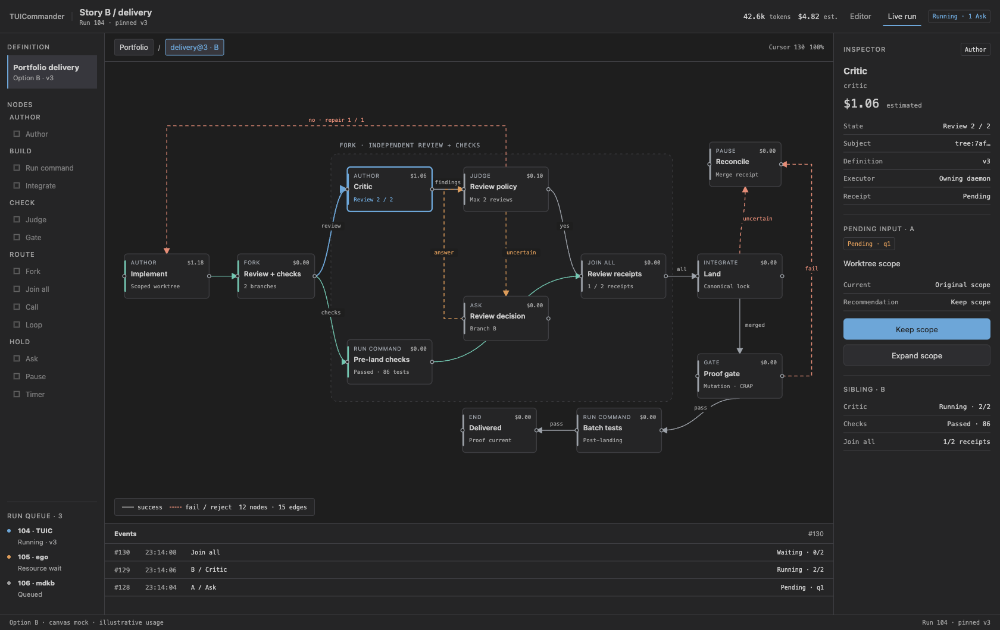

Selected · B
Portfolio delivery
Editor canvas
Live run canvas
Verification
Study

Editor · portfolio · draft 4 / published v3

Editor · delivery · configurable Author

Live run · portfolio · pending A / running B

Live run · delivery B · costs / receipts